课程概览与事务安排
这门课讲什么、五个作业与项目、评分政策；AI 系统与智能体系统为何不同于传统计算机系统。
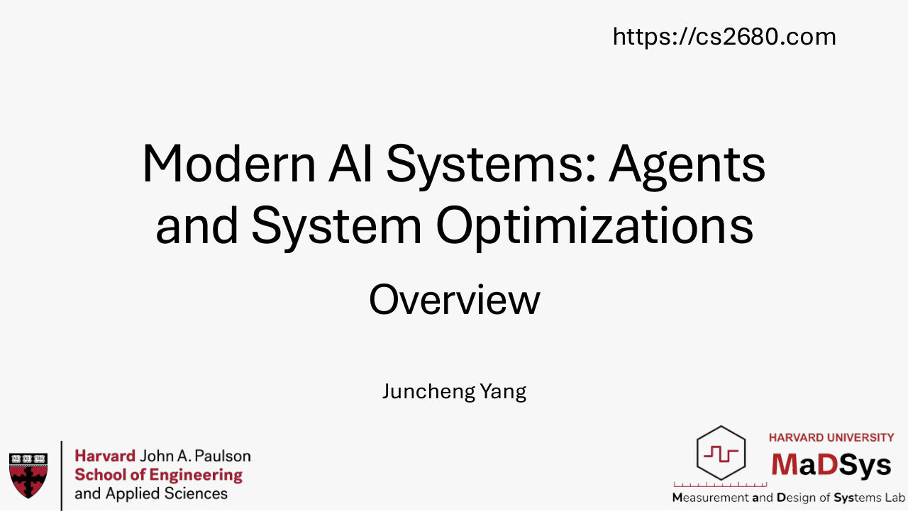
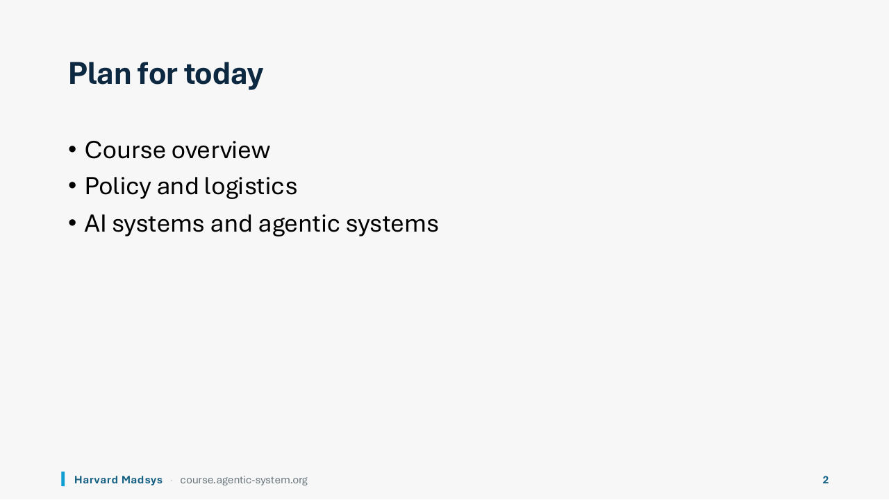
今天的安排
- 课程概览
- 课程政策与事务安排
- AI 系统与智能体系统（Agentic Systems）
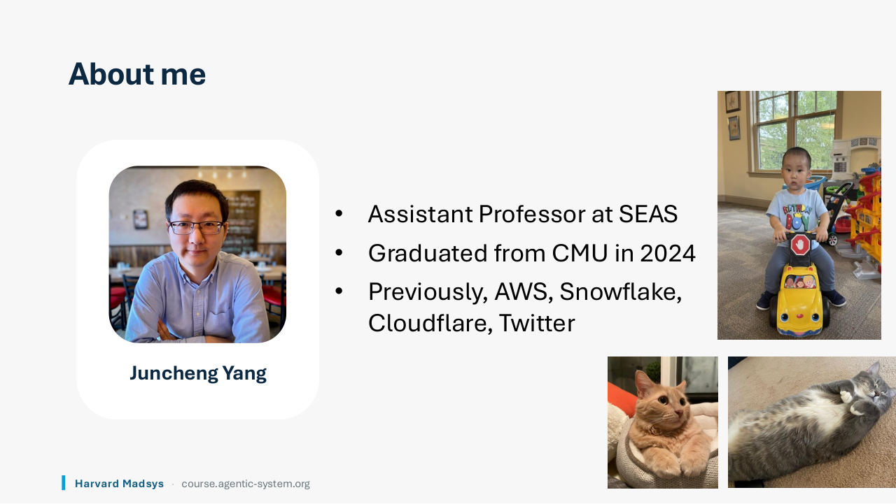
关于我
Juncheng Yang
- 哈佛 SEAS 助理教授
- 2024 年毕业于 CMU
- 曾任职 AWS、Snowflake、Cloudflare、Twitter
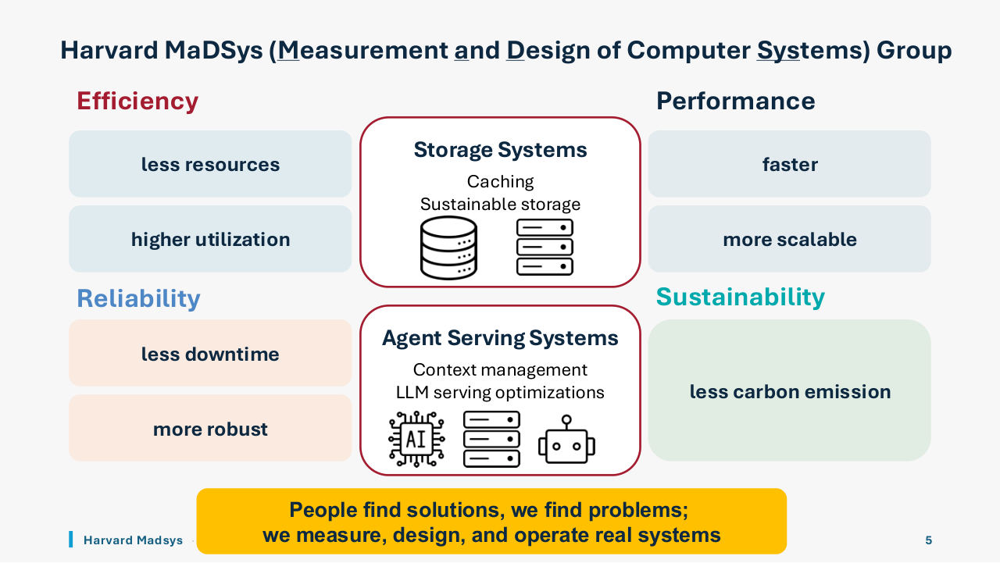
哈佛 MaDSys（计算机系统测量与设计）研究组
- 效率：更少资源、更高利用率
- 可靠性：更少宕机、更健壮
- 性能：更快、更可扩展
- 可持续性：更低碳排放
- 研究方向：存储系统、缓存、可持续存储、智能体推理服务系统、上下文管理、LLM 推理服务优化
我和助教们
- 讲师：Juncheng Yang；助教（TF）：Yiyu Liu、Yunjia Zheng
- 答疑时间：均需预约
- 课程组邮箱：cs2680-staff@g.harvard.edu
我会努力记住每个人的名字
请在提问或回答问题前，先报上自己的名字。
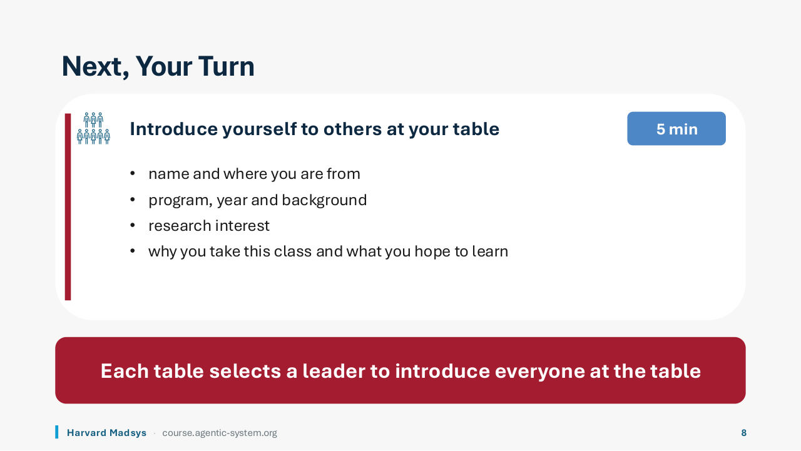
接下来，轮到你们了（5 分钟）
向同桌的同学介绍自己：
- 姓名、来自哪里
- 项目/年级/背景
- 研究兴趣
- 为什么选这门课、希望学到什么
每桌推选一位组长，介绍本桌所有人。
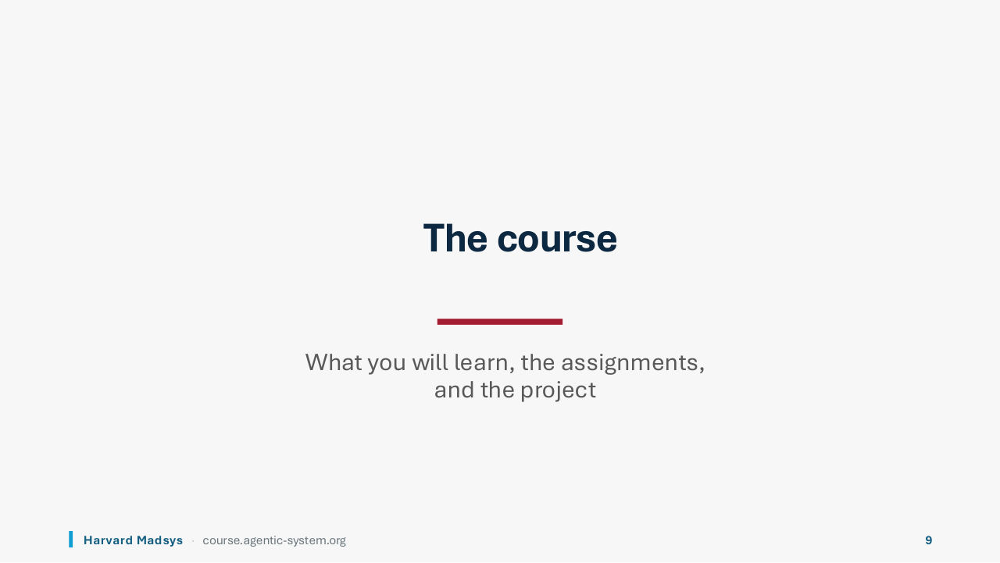
关于这门课
你将学到什么、作业，以及课程项目
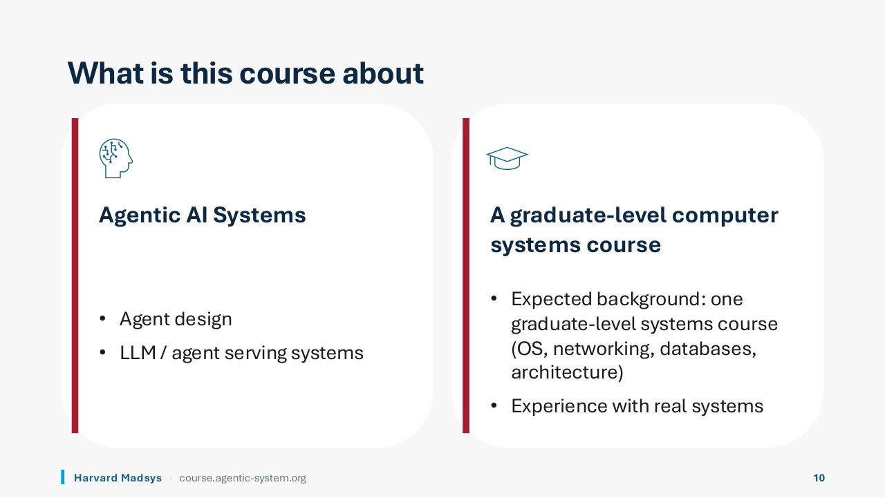
这门课讲什么
智能体 AI 系统（Agentic AI Systems）——一门研究生级的计算机系统课程
- 预期背景：至少一门研究生级系统课（操作系统、网络、数据库、体系结构）
- 有真实系统的实践经验
- 内容：智能体设计；LLM / 智能体推理服务系统
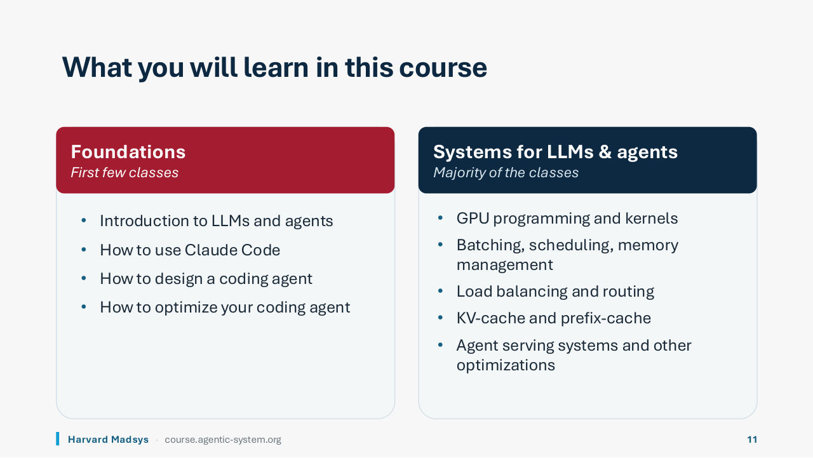
你将在本课程中学到
基础（前几次课）
- LLM 与智能体入门
- 如何使用 Claude Code
- 如何设计一个编程智能体（coding agent）
- 如何优化你的编程智能体
面向 LLM 与智能体的系统（大部分课程）
- GPU 编程与 kernel
- 批处理（batching）、调度、内存管理
- 负载均衡与路由
- KV-cache 与前缀缓存（prefix-cache）
- 智能体推理服务系统及其他优化
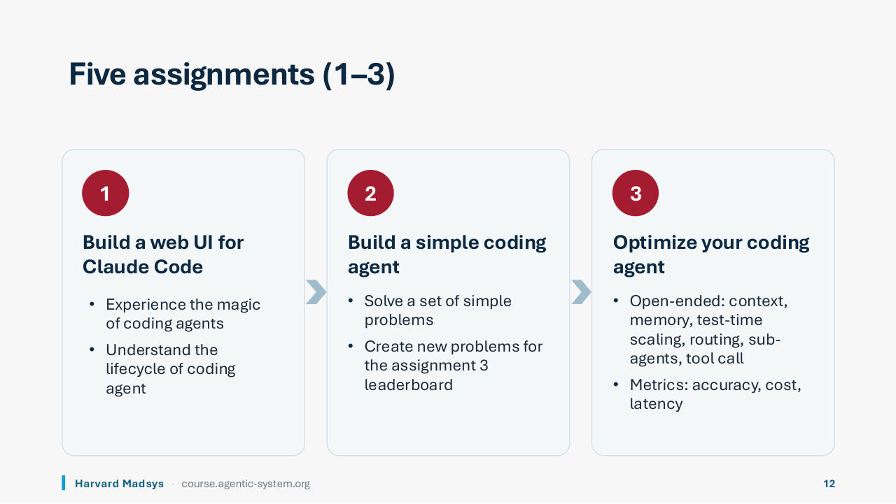
五个作业（1–3）
- 为 Claude Code 构建一个 Web UI——亲身体验编程智能体的“魔力”；理解编程智能体的生命周期
- 构建一个简单的编程智能体——解决一组简单问题；为作业 3 的排行榜出新题
- 优化你的编程智能体——开放式：上下文、记忆、测试时扩展（test-time scaling）、路由、子智能体、工具调用；指标：准确率、成本、延迟
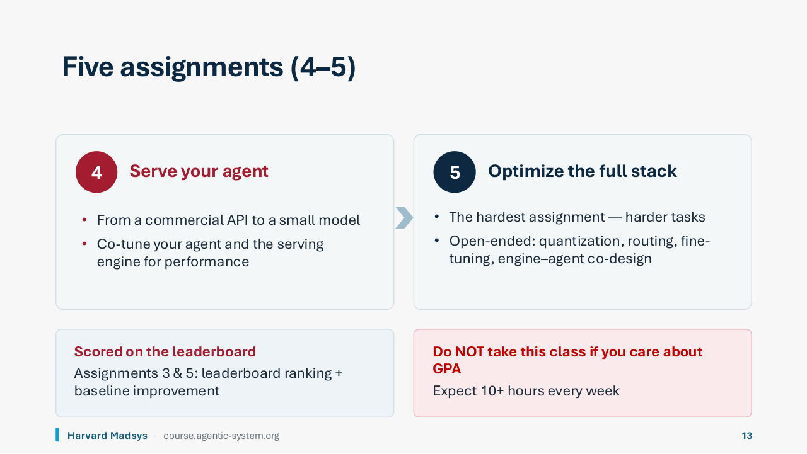
五个作业（4–5）
- 为你的智能体提供推理服务（Serve your agent）——从商用 API 换成一个小模型；联合调优智能体与推理引擎以提升性能
- 优化整个技术栈——最难的作业，任务更难；开放式：量化、路由、微调、引擎—智能体协同设计
- 作业 3 和 5 按排行榜计分：排名 + 相对 baseline 的提升
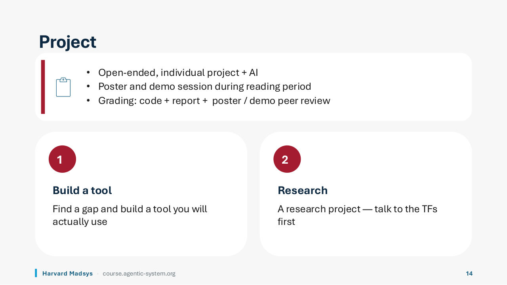
课程项目
- 构建一个工具：找到一个空白点，做一个你自己真的会用的工具
- 研究：做一个研究项目——请先与助教沟通
- 开放式、个人项目（+ AI）
- 在复习周（reading period）进行海报与演示
- 评分：代码 + 报告 + 海报/演示互评
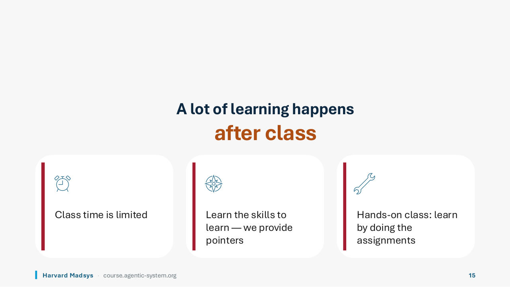
大量的学习发生在课后
- 课堂时间有限
- 动手型课程：通过做作业来学习
- 学会“学习的技能”——我们提供方向指引
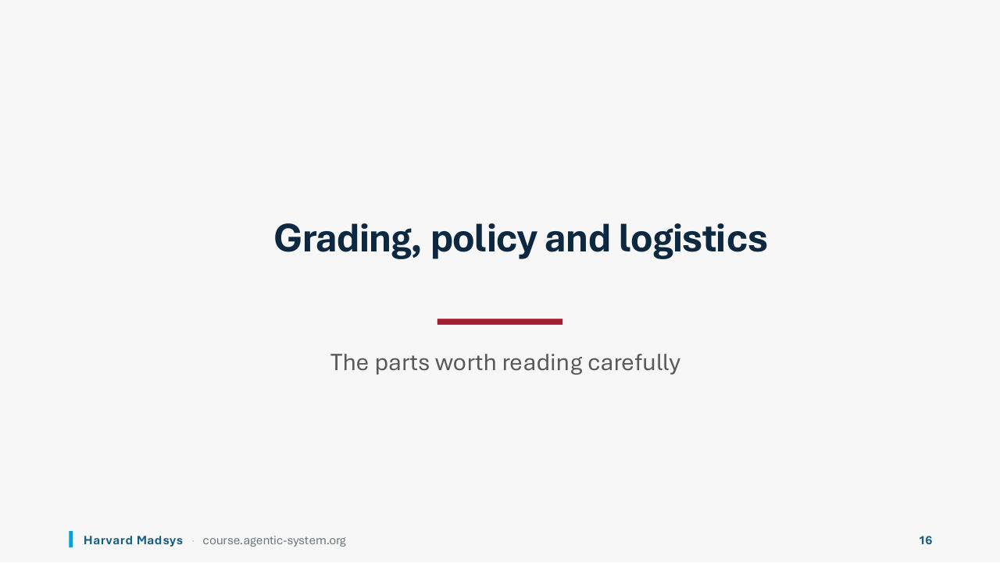
评分、政策与事务安排
值得仔细阅读的部分
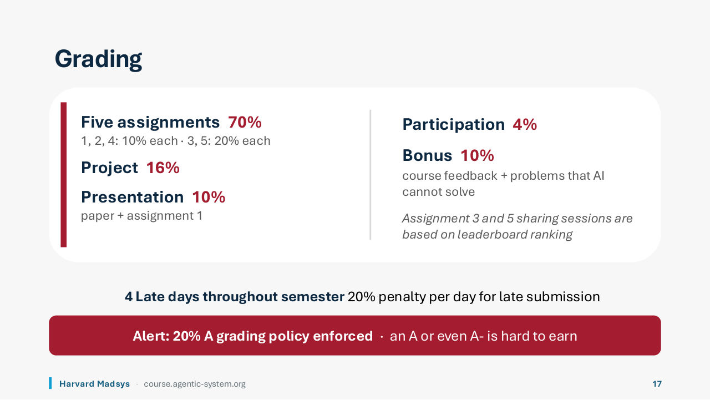
评分
- 五个作业 70%：作业 1、2、4 各 10%；作业 3、5 各 20%
- 课程项目 16%
- 课堂展示 10%：论文 + 作业 1
- 课堂参与 4%
- 加分 10%：课程反馈 + “AI 解决不了的问题”
- 作业 3、5 的分享环节依据排行榜排名
- 整学期共 4 个迟交日；每迟交一天扣 20%
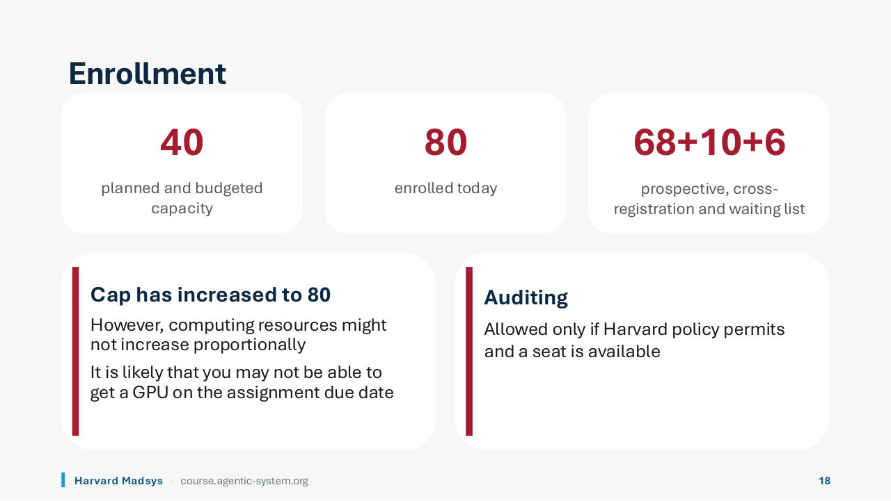
选课人数
- 40：原计划和预算的容量
- 80：目前已选课人数
- 68+10+6：意向选课、跨校注册与候补名单
- 旁听：仅在哈佛政策允许且有座位时可以
- 上限已提高到 80 人，但计算资源未必按比例增加——作业截止日你很可能抢不到 GPU
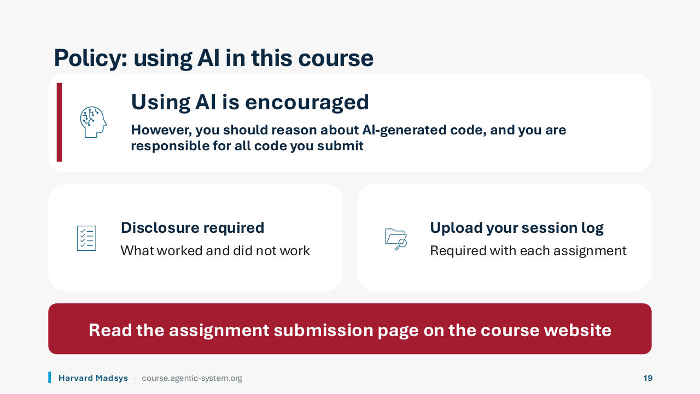
政策：在本课程中使用 AI
- 鼓励使用 AI：但你必须理解 AI 生成的代码，并对你提交的所有代码负责
- 必须披露：哪些做法有效、哪些无效
- 上传你的会话日志（session log）：每次作业必交
- 请阅读课程网站上的作业提交页面
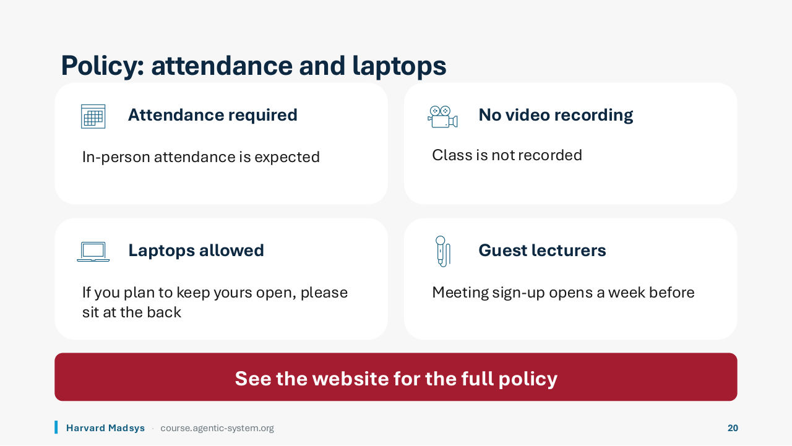
政策：出勤与笔记本电脑
- 必须出勤：要求线下到场
- 允许使用笔记本：如果你打算一直开着，请坐在后排
- 客座讲座：见面预约在一周前开放
- 课堂不录像：禁止录像；完整政策见网站
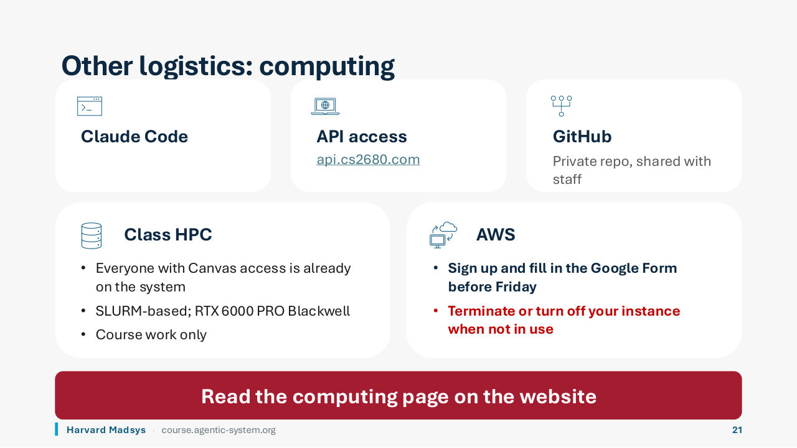
其他事务：计算资源
请阅读网站上的计算资源页面
- Claude Code
- API 访问：api.cs2680.com
- GitHub：私有仓库，与课程组共享
- 课程 HPC：所有有 Canvas 权限的人都已开通；基于 SLURM；RTX 6000 PRO Blackwell；仅限课程使用
- AWS：周五前注册并填写 Google 表单；不用时请终止或关闭实例
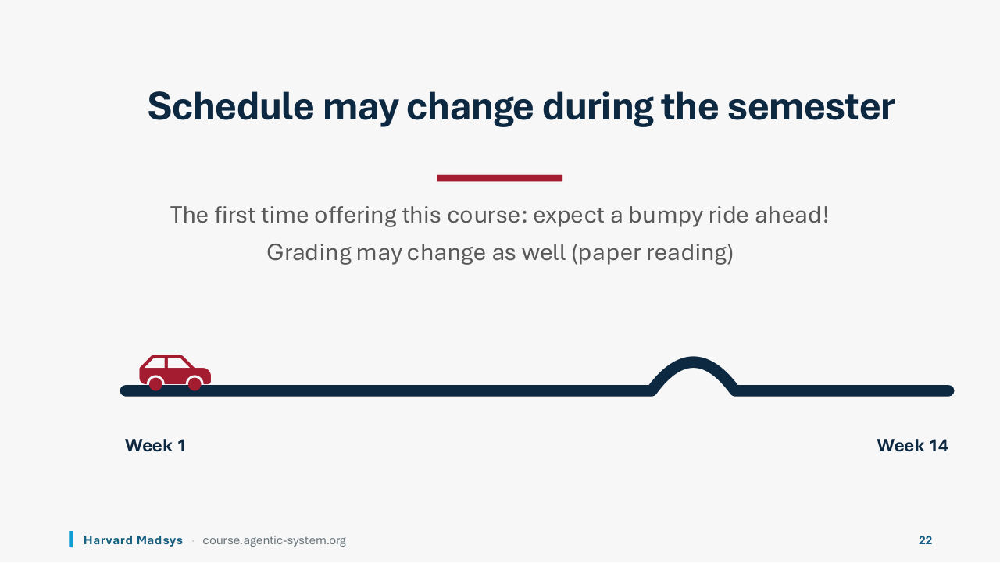
课表在学期中可能调整
- 第 1 周 → 第 14 周
- 这是本课程首次开设：做好一路颠簸的准备！
- 评分方式也可能调整（论文阅读部分）
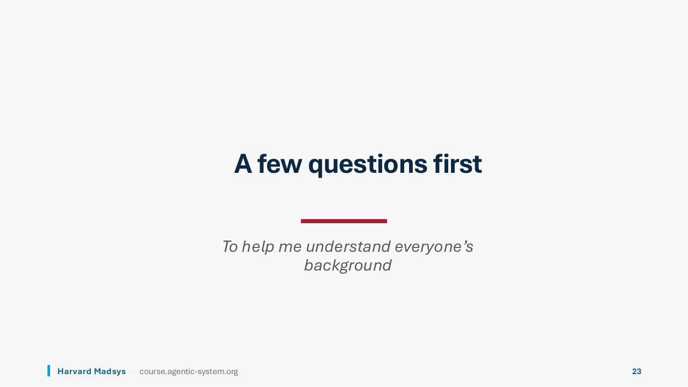
先问几个问题
帮助我了解大家的背景
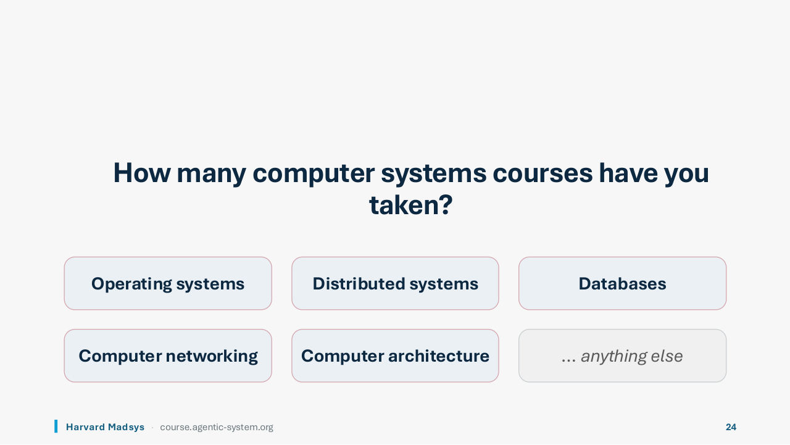
你上过多少门计算机系统课？
操作系统、分布式系统、数据库、计算机网络、计算机体系结构……以及其他
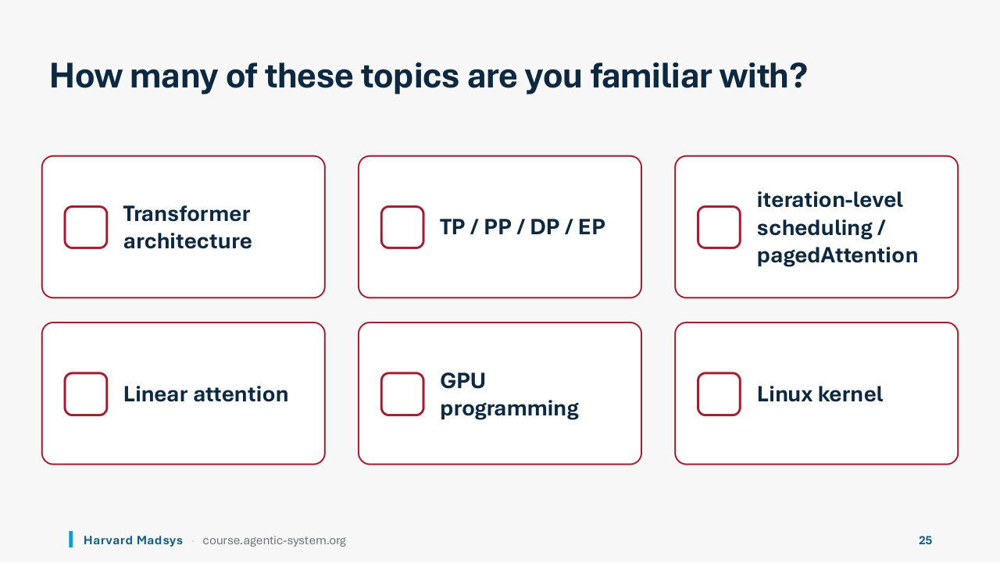
下面这些主题你熟悉几个？
- Transformer 架构
- TP / PP / DP / EP（张量/流水线/数据/专家并行）
- 迭代级调度 / PagedAttention
- 线性注意力
- GPU 编程
- Linux 内核
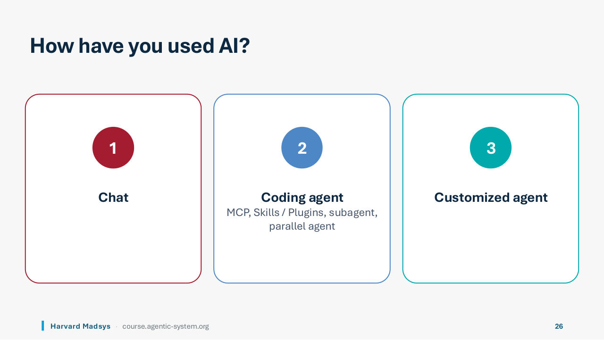
你是怎么使用 AI 的？
- 聊天
- 编程智能体：MCP、Skills / 插件、子智能体、并行智能体
- 定制化智能体
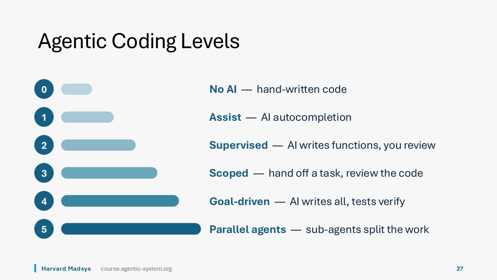
智能体编程的等级（Agentic Coding Levels）
- 0 无 AI——纯手写代码
- 1 辅助——AI 自动补全
- 2 监督式——AI 写函数，你来审查
- 3 限定范围——交出一个任务，审查代码
- 4 目标驱动——AI 写全部代码，由测试来验证
- 5 并行智能体——子智能体分工协作
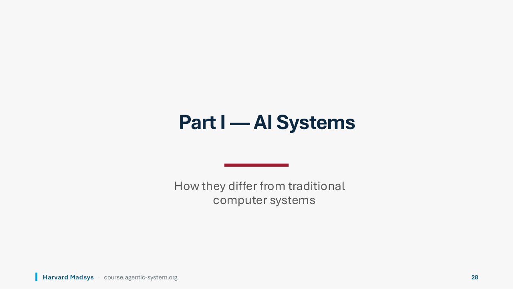
第一部分 — AI 系统
它们与传统计算机系统有何不同
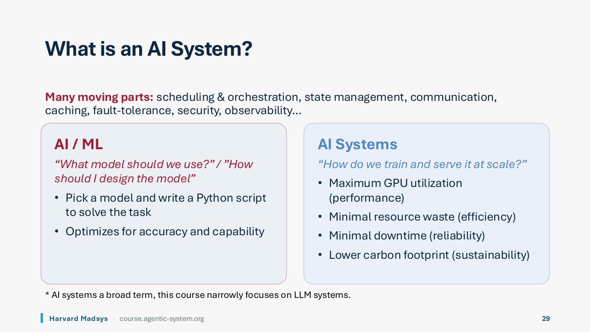
什么是 AI 系统？
AI / ML：“该用什么模型？”/“模型该怎么设计？”
- 选一个模型，写个 Python 脚本解决任务
- 优化目标：准确率与能力
AI 系统：“如何大规模地训练和提供推理服务？”
- 最大化 GPU 利用率（性能）
- 最少的资源浪费（效率）
- 最少的宕机时间（可靠性）
- 更低的碳足迹（可持续性）
\* “AI 系统”是个宽泛的说法，本课程聚焦于 LLM 系统。
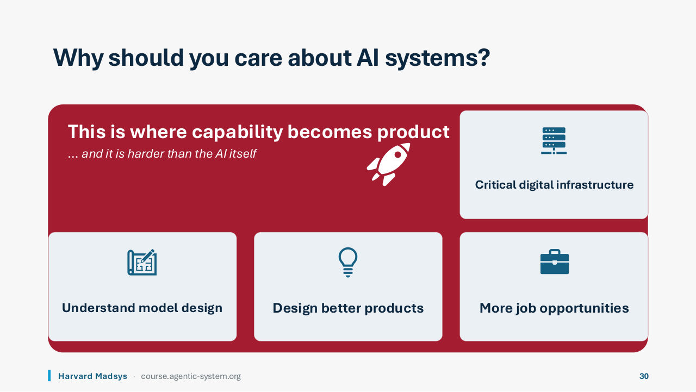
为什么要关心 AI 系统？
这里是能力变成产品的地方……而且它比 AI 本身更难
- 关键的数字基础设施
- 理解模型设计
- 设计更好的产品
- 更多就业机会
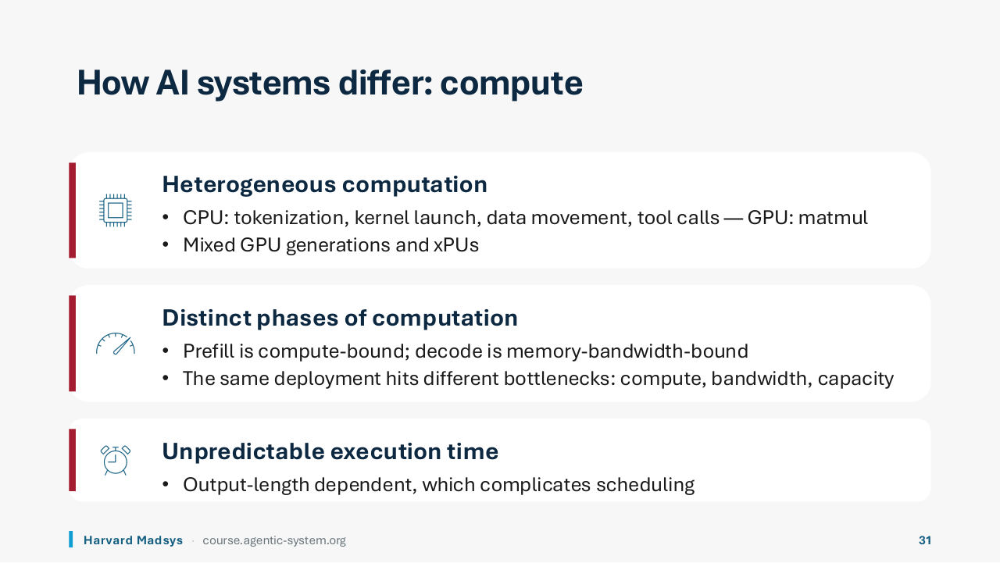
AI 系统的不同之处：计算
异构计算
- CPU：分词、kernel 启动、数据搬运、工具调用；GPU：矩阵乘
- 混合多代 GPU 与各种 xPU
截然不同的计算阶段
- 预填充（prefill）是计算密集型；解码（decode）是内存带宽密集型
- 同一部署会撞上不同瓶颈：算力、带宽、容量
执行时间不可预测
- 取决于输出长度，使调度变得复杂
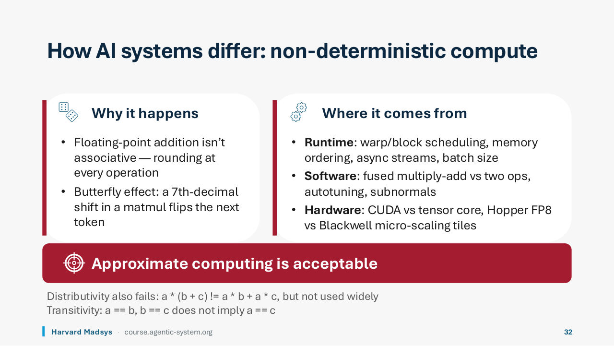
AI 系统的不同之处：非确定性计算
为什么会这样
- 浮点加法不满足结合律——每次运算都有舍入
- 蝴蝶效应：矩阵乘中第 7 位小数的偏移，就能改变下一个 token
来源
- 运行时：warp/block 调度、内存序、异步流、batch 大小
- 软件：融合乘加（FMA）还是两次运算、自动调优、次正规数
- 硬件：CUDA core 与 tensor core、Hopper FP8 与 Blackwell 微缩放（micro-scaling）tile
近似计算是可以接受的。
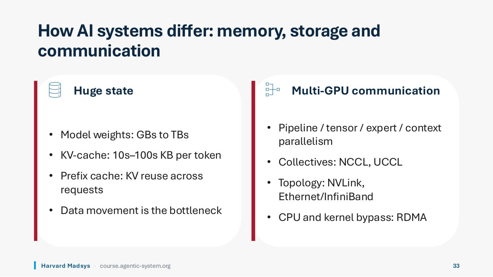
AI 系统的不同之处：内存、存储与通信
巨大的状态
- 模型权重：GB 到 TB 级
- KV-cache：每个 token 几十到几百 KB
- 前缀缓存：跨请求复用 KV
- 数据搬运才是瓶颈
多 GPU 通信
- 流水线 / 张量 / 专家 / 上下文并行
- 集合通信：NCCL、UCCL
- 拓扑：NVLink、以太网/InfiniBand
- 绕过 CPU 与内核：RDMA
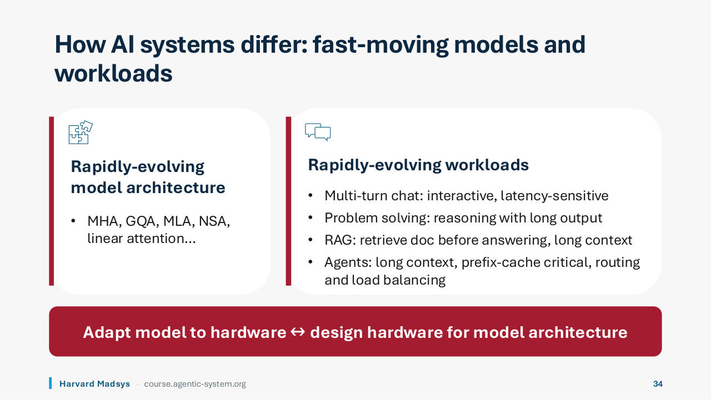
AI 系统的不同之处：快速演进的模型与负载
快速演进的模型架构
- MHA、GQA、MLA、NSA、线性注意力……
- 让模型适配硬件 ⇄ 为模型架构设计硬件
快速演进的负载
- 多轮对话：交互式、对延迟敏感
- 解题：推理，输出很长
- RAG：先检索文档再回答，长上下文
- 智能体：长上下文，前缀缓存至关重要，需要路由与负载均衡
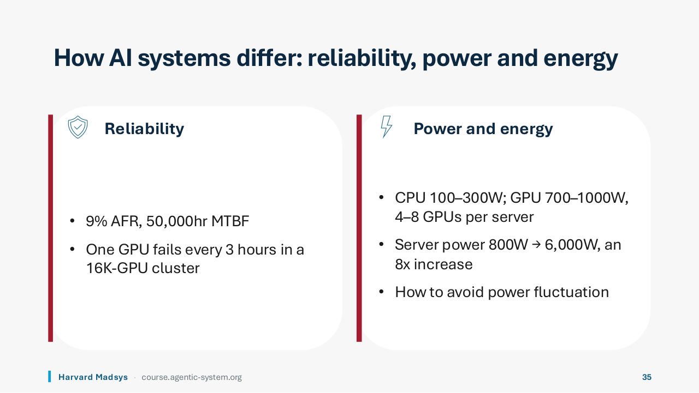
AI 系统的不同之处：可靠性、功耗与能源
可靠性
- 9% 年故障率（AFR），平均无故障时间 50,000 小时
- 在 16K GPU 的集群里，每 3 小时就坏一块 GPU
功耗与能源
- CPU 100–300W；GPU 700–1000W，每台服务器 4–8 块 GPU
- 服务器功耗从 800W → 6,000W，增长 8 倍
- 如何避免功率波动
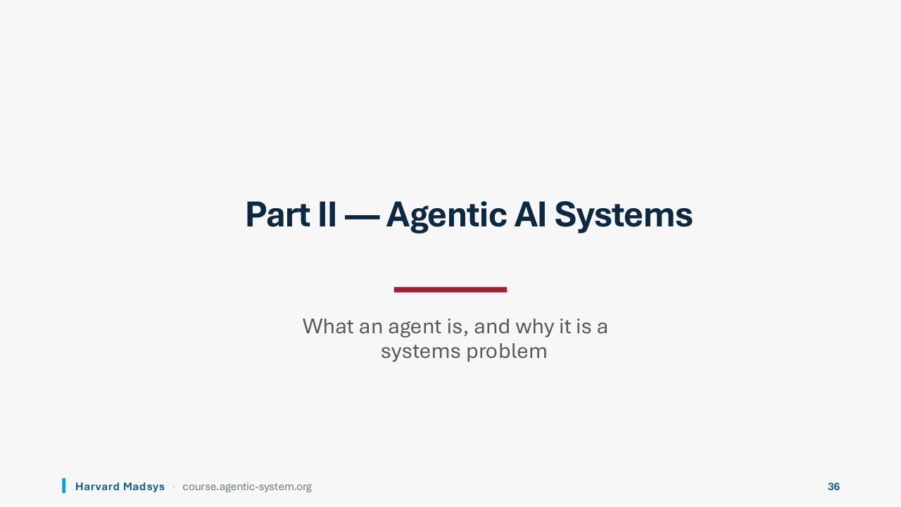
第二部分 — 智能体 AI 系统
什么是智能体，以及它为什么是一个系统问题
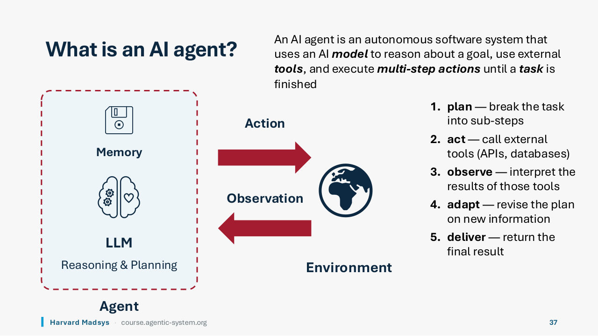
什么是 AI 智能体？
AI 智能体是一个自主的软件系统：它利用 AI 模型围绕目标进行推理、使用外部工具、执行多步动作，直到任务完成。
- 规划——把任务拆成子步骤
- 行动——调用外部工具（API、数据库）
- 观察——解读工具返回的结果
- 调整——根据新信息修订计划
- 交付——返回最终结果
（图：智能体 = LLM + 记忆 + 推理与规划；向环境发出动作，从环境获得观察）
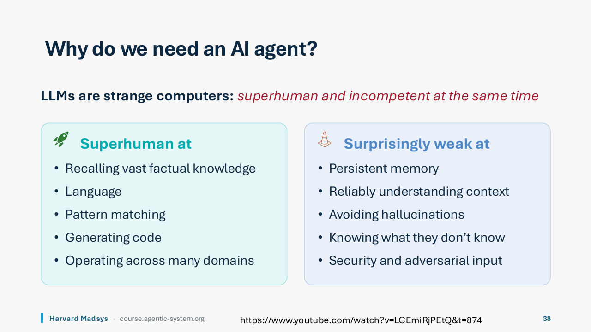
为什么需要 AI 智能体？
LLM 是一种奇怪的计算机：同时既超人又无能
超人之处
- 回忆海量事实知识
- 语言
- 模式匹配
- 生成代码
- 跨越众多领域工作
出奇地弱
- 持久记忆
- 可靠地理解上下文
- 避免幻觉
- 知道自己不知道什么
- 安全性与对抗性输入
（来源：Andrej Karpathy 演讲）
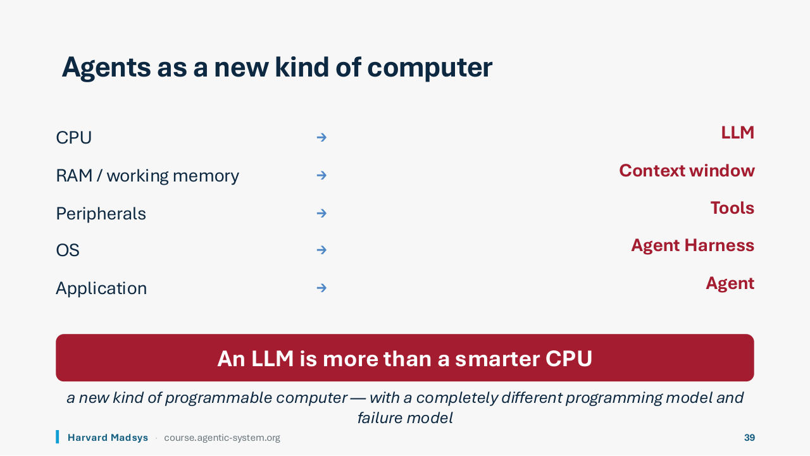
智能体是一种新型计算机
LLM 不只是一颗更聪明的 CPU——它是一种全新的可编程计算机，有着完全不同的编程模型和故障模型。
- LLM → CPU
- 上下文窗口 → RAM / 工作内存
- 工具 → 外设
- 智能体 Harness（运行框架）→ 操作系统
- 智能体 → 应用程序
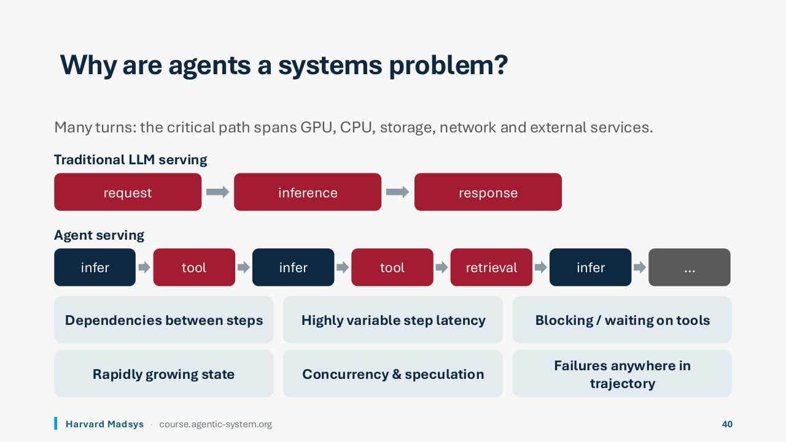
为什么智能体是一个系统问题？
- 传统 LLM 推理服务：请求 → 推理 → 响应
- 智能体推理服务：推理 → 工具 → 推理 → 工具 → 检索 → 推理 → ……
多轮交互：关键路径横跨 GPU、CPU、存储、网络和外部服务。
- 步骤之间存在依赖
- 步骤延迟高度可变
- 阻塞/等待工具
- 状态快速膨胀
- 并发与推测执行
- 轨迹中任何地方都可能失败
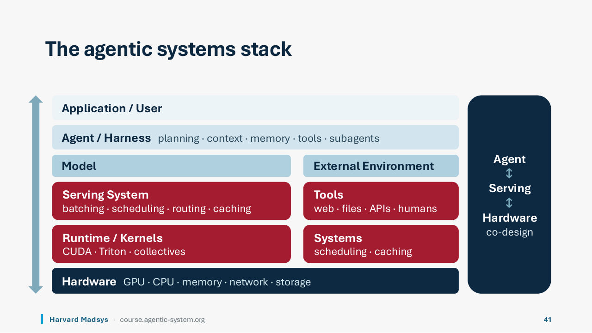
智能体系统技术栈
- 应用 / 用户
- 智能体 / Harness：规划 · 上下文 · 记忆 · 工具 · 子智能体
- 模型
- 推理服务系统：批处理 · 调度 · 路由 · 缓存
- 运行时 / Kernel：CUDA · Triton · 集合通信
- 硬件：GPU · CPU · 内存 · 网络 · 存储
- 外部环境——工具：网页 · 文件 · API · 人类；系统：调度 · 缓存
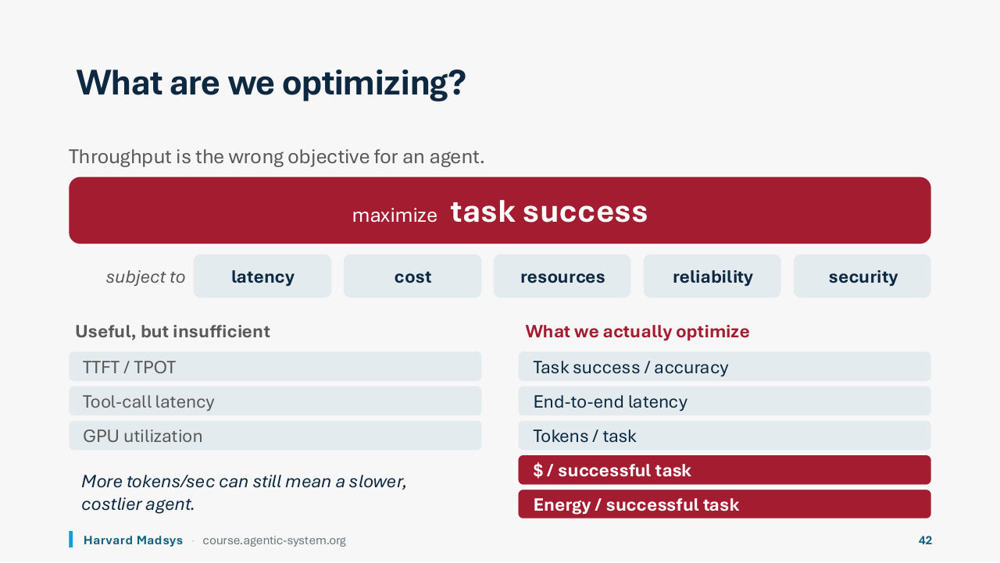
我们在优化什么？
对智能体而言，吞吐量是错误的优化目标。
有用但不够：TTFT / TPOT、工具调用延迟、GPU 利用率
我们真正优化的：任务成功率/准确率、端到端延迟、每任务 token 数、每个成功任务的美元成本、每个成功任务的能耗
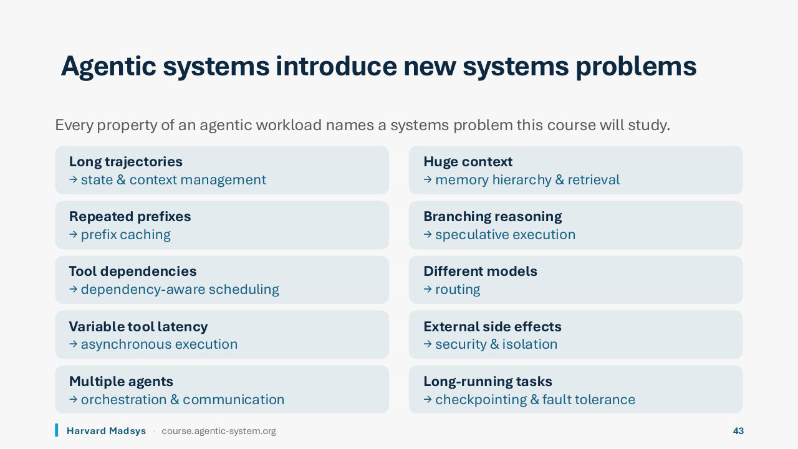
智能体系统带来新的系统问题
智能体负载的每一个特性，都对应着本课程要研究的一个系统问题：
- 长轨迹 → 状态与上下文管理
- 重复的前缀 → 前缀缓存
- 工具依赖 → 依赖感知的调度
- 工具延迟可变 → 异步执行
- 多个智能体 → 编排与通信
- 巨大的上下文 → 存储层次与检索
- 分支式推理 → 推测执行
- 不同的模型 → 路由
- 外部副作用 → 安全与隔离
- 长时间运行的任务 → 检查点与容错
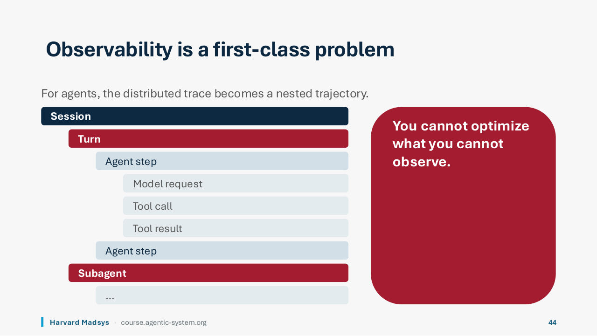
可观测性是一等问题
对智能体来说，分布式追踪（trace）变成了嵌套的轨迹（trajectory）：
会话 → 轮次 → 智能体步骤 → 模型请求 → 工具调用 → 工具结果 → 智能体步骤 → 子智能体 → ……
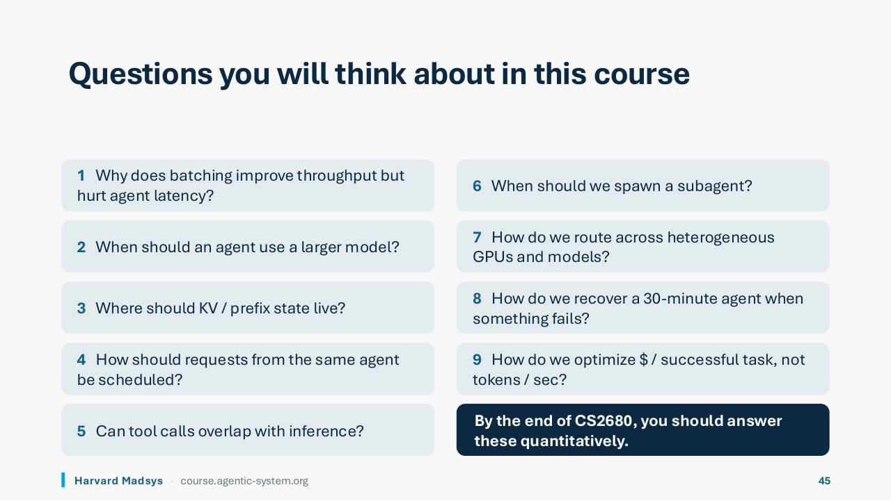
本课程中你要思考的问题
- 为什么批处理能提升吞吐量，却会损害智能体延迟？
- 智能体什么时候该用更大的模型？
- KV / 前缀状态应该放在哪里？
- 来自同一个智能体的请求应该如何调度？
- 工具调用能和推理重叠执行吗？
- 什么时候应该派生子智能体？
- 如何在异构 GPU 和模型之间做路由？
- 一个运行了 30 分钟的智能体出故障时，如何恢复？
- 如何优化“每个成功任务的美元成本”，而不是 tokens/sec？
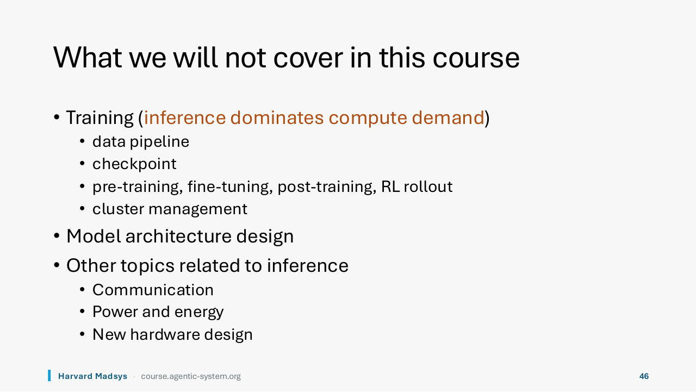
本课程不涉及的内容
- 训练（推理才是算力需求的大头）
- 数据管线
- 检查点
- 预训练、微调、后训练、RL rollout
- 集群管理
- 模型架构设计
- 其他与推理相关的话题
- 通信
- 功耗与能源
- 新硬件设计
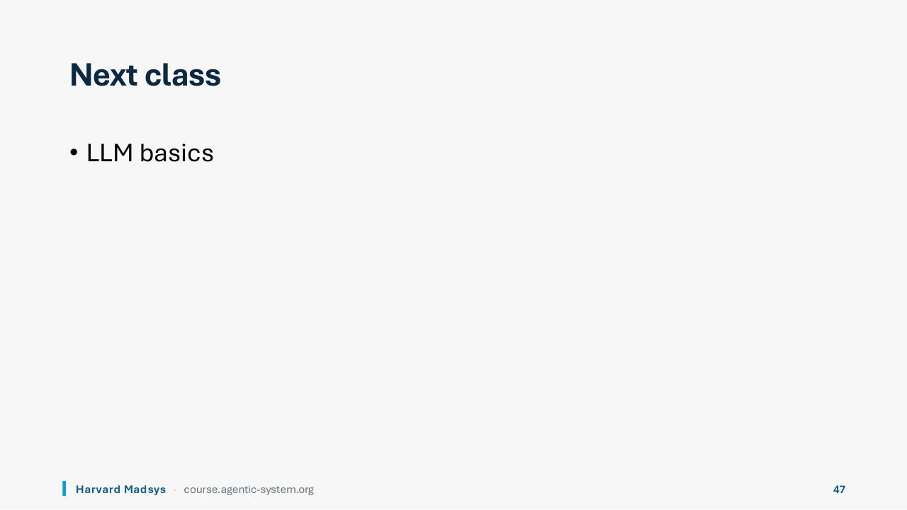
下节课
- LLM 基础
（空白页）
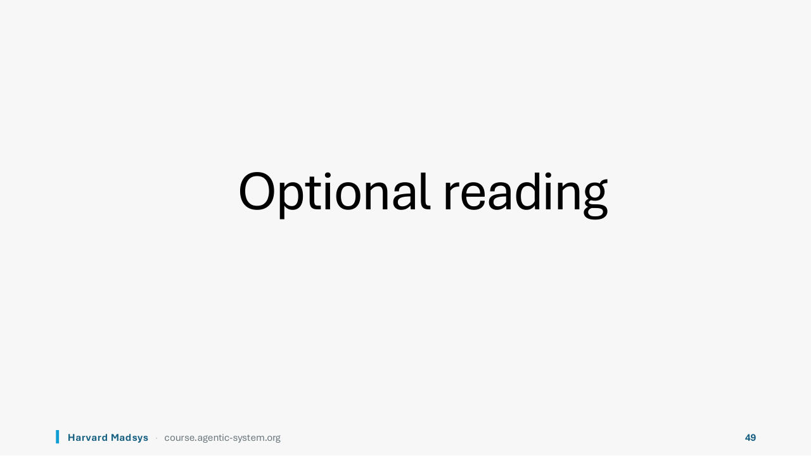
选读材料
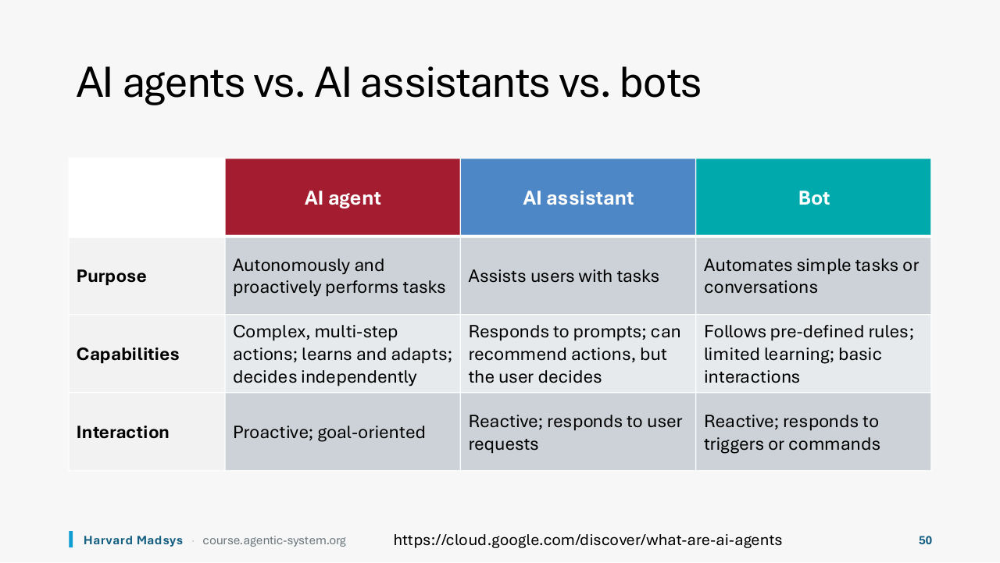
AI 智能体 vs. AI 助手 vs. 机器人（Bot）
| AI 智能体 | AI 助手 | 机器人 | |
|---|---|---|---|
| 目的 | 自主、主动地执行任务 | 协助用户完成任务 | 自动化简单任务或对话 |
| 能力 | 复杂的多步动作；学习与适应；独立决策 | 响应提示；可推荐动作，但由用户决定 | 遵循预设规则；学习有限；基础交互 |
| 交互方式 | 主动；目标导向 | 被动；响应用户请求 | 被动；响应触发或命令 |
（来源：Google Cloud）
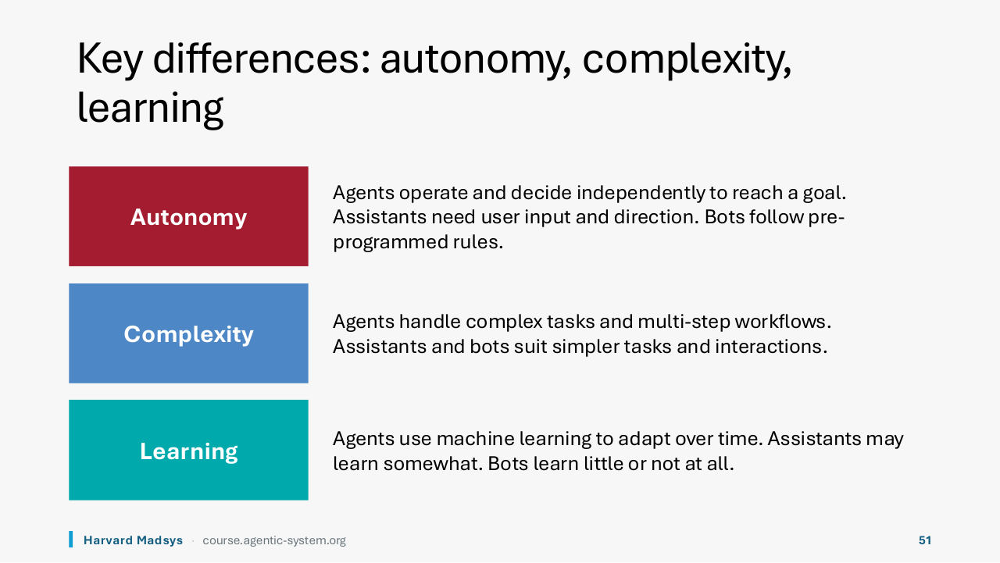
关键区别：自主性、复杂度、学习能力
- 自主性：智能体独立运行和决策以达成目标；助手需要用户输入与指引；机器人遵循预编程规则。
- 复杂度：智能体能处理复杂任务和多步工作流；助手和机器人适合较简单的任务与交互。
- 学习能力：智能体利用机器学习随时间适应；助手可能有一定学习能力；机器人几乎不学习。